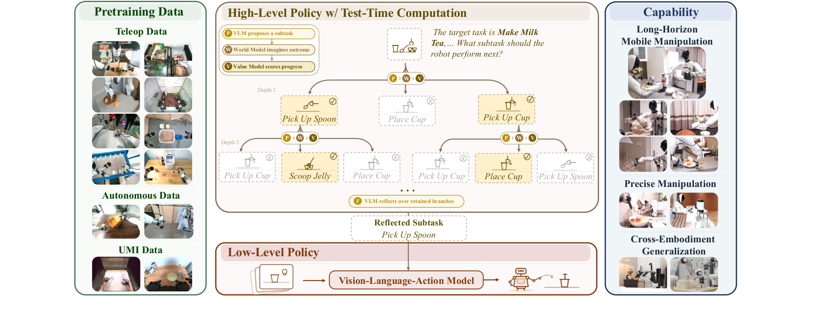
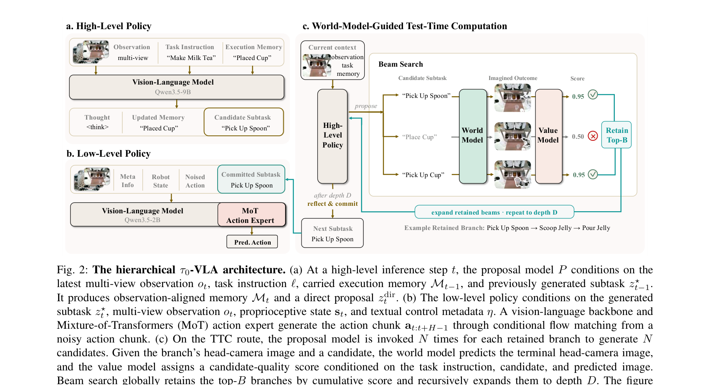

밀크티 만들기처럼 수십 단계가 이어지는 작업에서는, 로봇이 "다음에 뭘 할까"를 매번 한 번의 직감으로 정한다. 문제는 여기서 한 번 잘못 고르면 아무리 손을 정교하게 움직여도 되돌릴 수 없다는 것 — 엉뚱한 일을 완벽하게 해낼 뿐이다. 이 논문은 그 "다음 할 일" 결정에만 생각할 시간을 더 쓰게 만든다. 후보를 여러 개 떠올리고 → 각각을 실행하면 화면이 어떻게 될지 머릿속에서 그려보고 → 어느 쪽이 작업을 더 진척시키는지 채점하고 → 유망한 것만 남겨 몇 수 앞까지 내다본 뒤 결정한다. 사람이 어려운 선택 앞에서만 잠시 멈춰 "이렇게 하면 어떻게 되지?"를 굴려보는 것과 같다. 실제 손발이 되는 하위 모델은 40,115시간 분량 실제 로봇 데이터로 학습했다. 장기 작업 평균 성공률 45%(π0.5 22.5%, GR00T N1.7 2.5%), 학습 때 못 본 배치에서 다음 단계를 맞히는 정확도 74%(한 번에 정하면 50%).
방 청소·요리·음료 준비 같은 장기(long-horizon) 조작은 수분~수시간에 걸친 연속적 의사결정을 요구한다. 로봇은 무엇이 끝났고 무엇이 남았는지 추론하고, 중간 결과를 검증하며 국소 실패를 복구해야 한다. 핵심은 "잘못된 subtask 선택은 정밀한 모터 제어로도 되돌릴 수 없다"는 점 — 로봇이 엉뚱한 subtask를 완벽하게 수행할 뿐이다.
대부분의 계층형 VLA는 이 subtask 결정을 매 스텝 단일 forward pass로 내려, 어렵거나 결정적인 선택에 추가 연산을 배분할 메커니즘이 없다. τ0-VLA는 상위 subtask 생성을 연산량으로 확장 가능한 추론(compute-scalable inference) 문제로 재정의한다.
"밀크티를 만들어"라는 지시를 관절 움직임으로 바로 바꾸기는 어렵다. 그래서 역할을 둘로 쪼갠다 — 상위 정책은 "지금 뭘 할 차례인가"(예: "숟가락을 집어라")를 정하고, 하위 정책은 그 한 문장을 받아 실제 관절 움직임을 만든다. 상위는 무엇을, 하위는 어떻게를 담당한다.
상위 정책이 판단할 때 보는 재료는 네 가지다: ① 전체 목표("밀크티를 만들어"), ② 실행 메모리 — 지금까지 뭘 끝냈는지 적어둔 메모(예: "컵을 놓았음"), ③ 직전에 지시한 일, ④ 현재 카메라 화면. 이걸 종합해 메모를 갱신하고 다음 할 일을 내놓는다.
다음 할 일이 직전과 같으면 하던 동작을 계속 이어가고, 바뀌면 새 동작으로 전환한다. 즉 상위 정책은 단계 전환 시점을 스스로 결정하는 역할도 겸한다.
Qwen3.5-9B VLM. 멀티뷰 관찰 + 태스크 지시 + 실행 메모리 + 직전 subtask를 받아,
여기서 test-time computation이란 모델을 더 크게 만들거나 더 학습시키는 게 아니라, 이미 학습된 모델을 실행 시점에 여러 번 돌려 답의 질을 높이는 방식이다. 네 가지 부품이 협업한다.
이들을 묶는 것이 beam search다 — 후보를 전부 끝까지 따라가면 경우의 수가 폭발하므로, 매 단계마다 점수 상위 몇 개(B개)만 남기고 나머지는 버리는 탐색법이다. 살아남은 가지를 다시 펼치기를 D번 반복해 몇 수 앞을 내다본다.
상위가 정한 한 문장("숟가락을 집어라")과 함께 여러 각도의 카메라 영상, 로봇 자기 관절의 현재 각도, 그리고 어떤 로봇인지·어떻게 제어하는지를 적은 설명을 받는다. 마지막 항목이 있어야 팔 개수와 구조가 다른 여러 로봇에 같은 모델을 쓸 수 있다.
이걸 조건으로 flow matching(무작위 노이즈에서 정답 궤적 쪽으로 흐르는 방향을 학습해두고, 실행할 때 그 흐름을 따라가 궤적을 완성하는 생성 방식)으로 앞으로 몇 스텝 분량의 움직임을 한 번에 만들어낸다. 매 순간 한 스텝씩 내놓는 대신 묶음으로 내놓으면 동작이 더 매끄럽고 빠르다.
| 방법 | Clean Room | Prepare Ingr. | Tomato&Egg | Make Milk Tea | Avg SR | Avg Progress |
|---|---|---|---|---|---|---|
| GR00T N1.7 | 0/10 | 1/10 | 0/10 | 0/10 | 2.50% | 45.29% |
| LingBot-VLA | 0/10 | 0/10 | 0/10 | 0/10 | 0.00% | 44.43% |
| π0.5 | 4/10 | 2/10 | 0/10 | 3/10 | 22.50% | 73.05% |
| τ0-VLA (직접 실행) | 4/10 | 2/10 | 0/10 | 5/10 | 27.50% | 80.10% |
| τ0-VLA (계층+Plan Once) | 5/10 | 4/10 | 4/10 | 5/10 | 45.00% | 87.85% |
계층 시스템(Plan Once)이 직접 실행 대비 평균 성공률을 27.5%→45.0%로 끌어올림. 특히 Tomato&Egg Stir Fry(22스텝) 같은 초장기 태스크에서 0/10 → 4/10.
그림 5: 연산량(PFLOPs/sample)↑ → 정확도↑·포화. Make Milk Tea는 Plan Once 64.7%에서 추가 연산으로 상승, Book Organization은 Plan Once 55.3%에서 상승. 즉 상위 의사결정에 test-time scaling이 성립.
Collect Laundry, Tidy Makeup Table(지시추종 3그룹: T-shirt/Cotton Pad/Eyelash Curler/Makeup Puff) 등 서로 다른 임바디먼트·태스크를 상위 정책 없이 전체 지시로 직접 실행 — 단일 하위 VLA가 다양한 로봇에서 동작함을 확인.


아직 추가 질문이 없습니다. 이 논문에 대해 더 궁금한 점을 물어보시면 답변을 여기에 정리해 추가합니다.